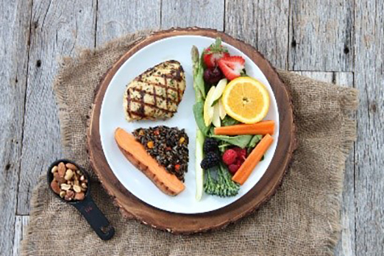

أدوات لاتباع الأكل الصحي: التحكم في الحصص الغذائية
التخطيط والتفكير مسبقاً من أجل وجباتك الرئيسية والخفيفة هو المفتاح نحو الأكل الصحي وهو الطريقة الأفضل لخسارة الوزن.
يساعد التخطيط على إدارة الميزانية المالية ويجعل التسوق أسهل بالإضافة انه يزيد من الطعام الغني بالعناصر الغذائية.
نحن جميعاً نحتاج للعناصر الغذائية بينما يختلف مقدار احتياجنا لها من شخص لآخر.
يمكنك استخدام الأدوات اليومية أو يدك لتقدير حجم الحصص الغذائية.
الخضار غير النشوية:
- حجم قبضة اليد او كرة تنس = كوب من الحبوب والمعكرونة والأرز ....
- حجم امتلاء كف اليدين معاً = 2 كوب من الخضروات....
- كف اليد = 90 جرام من اللحم، الدجاج ......
- اصبع واحد = حصة واحدة من الجبن..
- طرف اصبع الإبهام = 1 ملعقة صغيرة من الزيت.